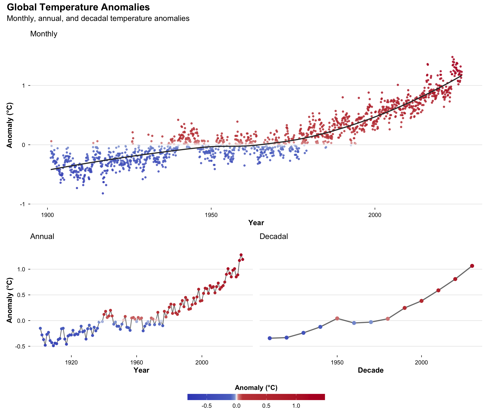
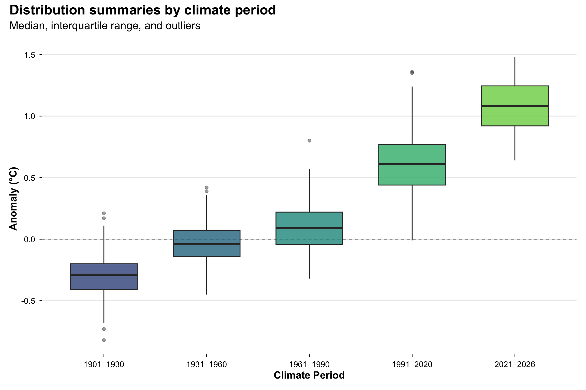
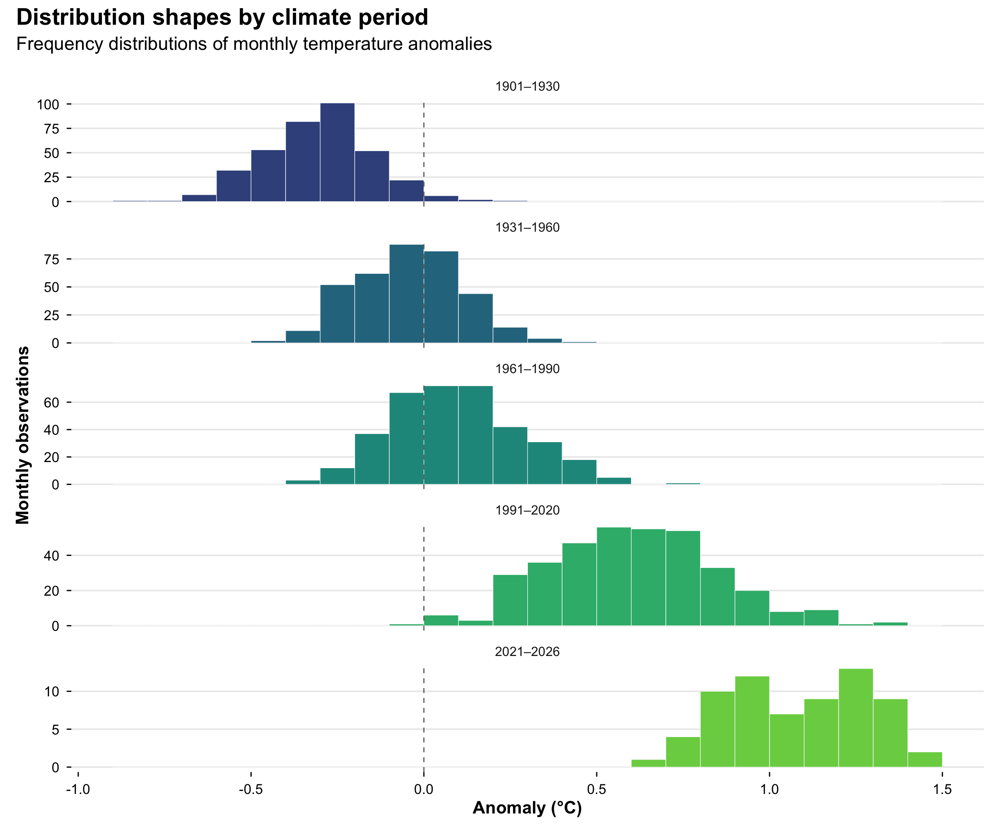
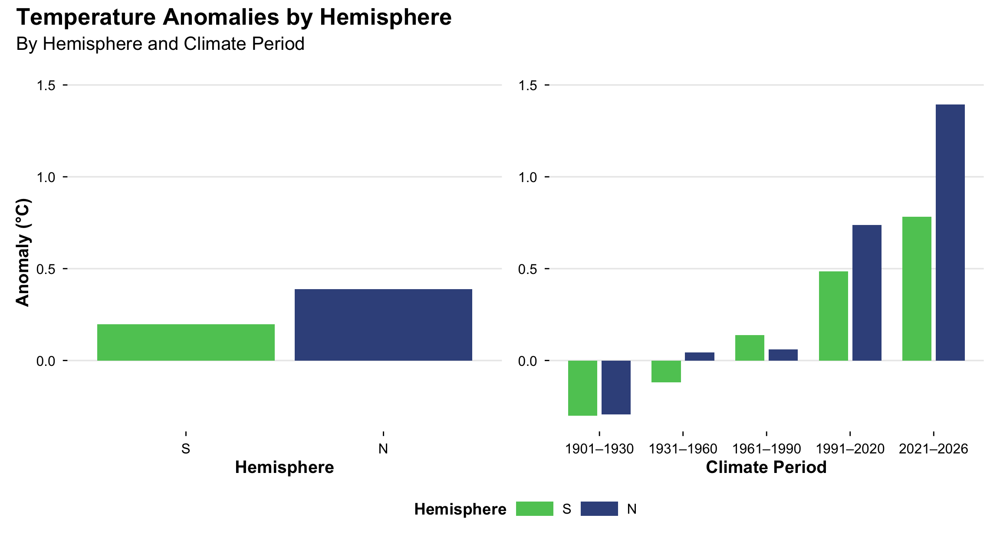
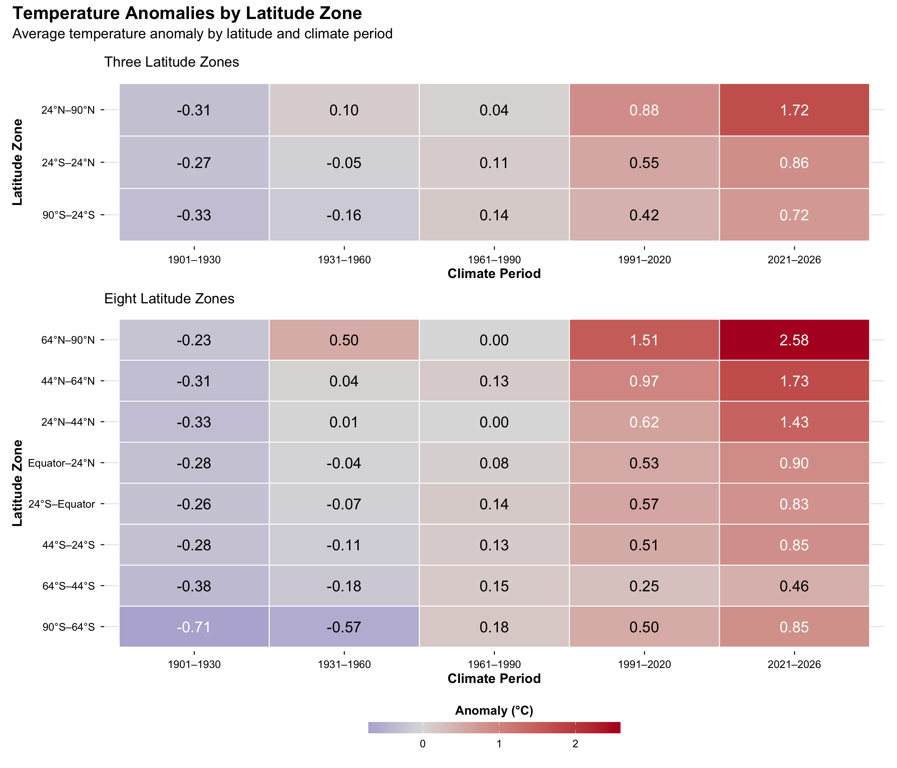
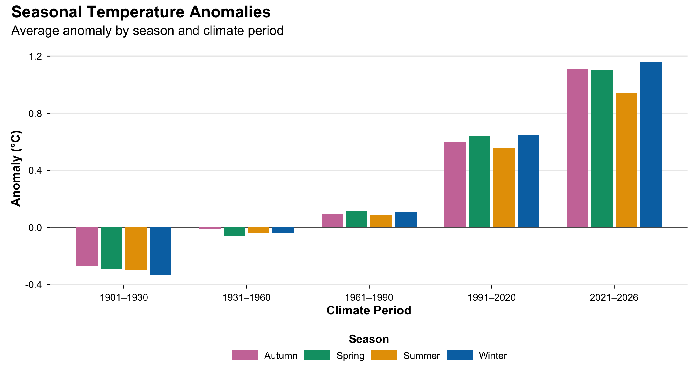
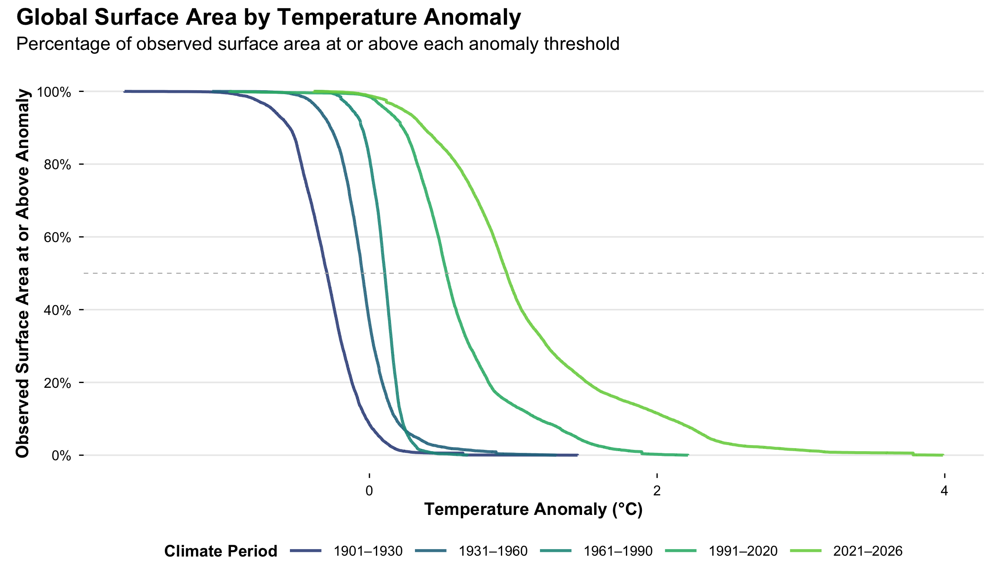
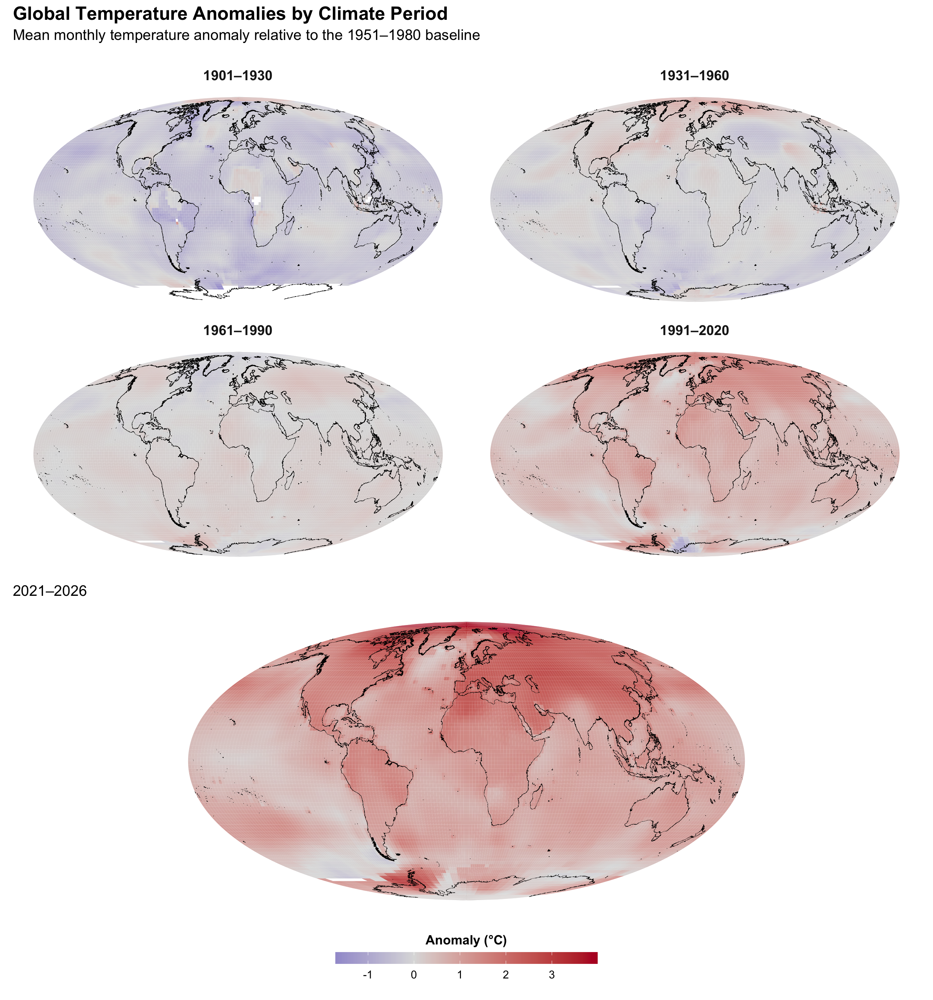

Code
build_maps <- TRUEThis step creates visualizations to show how temperature anomalies have changed.
- Global Time Series - Climate Period Comparisons - Temperature Distributions
- Hemisphere Differences - Geographic Latitude Zone Differences
- Seasonal Differences
- Surface Area Proportions - Global Maps
build_maps <- TRUEsuppressPackageStartupMessages({
library(tidyverse) # package collection used for data transforming and visualizing
library(gt) # package used to create and display formatted tables
library(patchwork) # arrange multiple plots in a visualization
library(pals) # provides coolwarm diverging palette
library(viridisLite) # provides sequential palette
library(sf)
})dir_raw <- file.path("data", "raw")
dir_transformed <- file.path("data", "transformed")source("R/climate-periods.R")theme_climate <- theme_minimal(base_size = 14) +
theme(
plot.title = element_text(size = 20, face = "bold", margin = margin(b = 6)),
plot.subtitle = element_text(size = 16, margin = margin(b = 10)),
axis.title = element_text(size = 15, face = "bold"),
axis.text = element_text(size = 12, color = "black"),
axis.ticks = element_line(linewidth = 0.5, color = "black"),
axis.ticks.length = grid::unit(4, "pt"),
legend.position = "bottom",
legend.direction = "horizontal",
legend.title = element_text(size = 14, face = "bold"),
legend.text = element_text(size = 12),
legend.key.width = unit(1.2, "cm"),
legend.key.height = unit(0.5, "cm"),
panel.grid.major.x = element_blank(),
panel.grid.minor = element_blank()
)legend_climate <- guide_colorbar(
direction = "horizontal",
title.position = "top",
title.hjust = 0.5,
barwidth = unit(10, "cm"),
barheight = unit(0.45, "cm"),
ticks = TRUE
)# Diverging temperature-anomaly palette
anomaly_colors <- pals::coolwarm(11)
# Sequential climate-period palette
climate_period_palette <- setNames(
viridisLite::viridis(
5,
option = "D",
begin = 0.25,
end = 0.80
),
c("1", "2", "3", "4", "5")
)
# Categorical hemisphere palette
hemisphere_palette <- c(
"N" = viridis(5)[2],
"S" = viridis(5)[4]
)
# Categorical season palette
season_palette <- c(
"Winter" = "#0072B2", # blue
"Spring" = "#009E73", # bluish green
"Summer" = "#E69F00", # orange
"Autumn" = "#CC79A7" # reddish purple
)anomaly_fill_scale <- function(limits) {
scale_fill_gradient2(
low = anomaly_colors[1],
mid = anomaly_colors[6],
high = anomaly_colors[11],
midpoint = 0,
limits = limits,
name = "Anomaly (°C)",
guide = legend_climate
)
}mollweide_crs <- "+proj=moll +lon_0=0 +x_0=0 +y_0=0 +datum=WGS84 +units=m" zone_levels_3 <- c(
"24N-90N",
"24S-24N",
"90S-24S"
)
zone_levels_8 <- c(
"64N-90N",
"44N-64N",
"24N-44N",
"EQU-24N",
"24S-EQU",
"44S-24S",
"64S-44S",
"90S-64S"
)
zone_labels_3 <- c(
"24N-90N" = "24°N–90°N",
"24S-24N" = "24°S–24°N",
"90S-24S" = "90°S–24°S"
)
zone_labels_8 <- c(
"64N-90N" = "64°N–90°N",
"44N-64N" = "44°N–64°N",
"24N-44N" = "24°N–44°N",
"EQU-24N" = "Equator–24°N",
"24S-EQU" = "24°S–Equator",
"44S-24S" = "44°S–24°S",
"64S-44S" = "64°S–44°S",
"90S-64S" = "90°S–64°S"
)df_monthly <- read_rds(file.path(dir_transformed, "monthly.rds"))
df_annual <- read_rds(file.path(dir_transformed, "annual.rds"))
df_decade <- read_rds(file.path(dir_transformed, "decade.rds"))
df_seasonal <- read_rds(file.path(dir_transformed, "seasonal.rds"))
df_hemisphere <- read_rds(file.path(dir_transformed,"hemisphere.rds"))
df_zone <- read_rds(file.path(dir_transformed,"zone.rds"))
sf_gridded <- read_rds(file.path(dir_transformed,"gridded.rds"))sf_coastline <- sf::read_sf(file.path(dir_raw,"global-coastline.gpkg"))latest_year <- max(df_monthly$year, na.rm = TRUE)
climate_period_labels <- climate_periods |>
arrange(start_year) |>
mutate(
display_end_year = lead(start_year) - 1,
display_end_year = if_else(
is.na(display_end_year),
latest_year,
display_end_year
),
label = paste0(
start_year,
"–",
display_end_year
)
) |>
select(
climate_period,
label
) |>
tibble::deframe()df_glb_mth <- df_monthly |> filter(geographic_id == "G")
df_glb_ann <- df_annual |> filter(geographic_id == "G")
df_glb_dec <- df_decade |> filter(geographic_id == "G")
df_glb_period <- df_monthly |> filter(geographic_id == "G",!is.na(climate_period))glb_color_limits <- range(
df_glb_mth$anomaly,
df_glb_ann$anomaly,
df_glb_dec$anomaly,
na.rm = TRUE
)glb_color_scale <- scale_color_gradientn(
colours = c(
"#3B4CC0", # strong blue
"#5B74C9", # blue
"#8FA4D7", # light blue
"#F7F7F7", # neutral at zero
"#D98D8D", # light red
"#C44747", # red
"#B40426" # strong red
),
values = scales::rescale(
c(
glb_color_limits[1],
-0.10,
-0.03,
0,
0.03,
0.10,
glb_color_limits[2]
),
from = glb_color_limits
),
limits = glb_color_limits,
name = "Anomaly (°C)",
guide = legend_climate
)mth_range <- range(df_glb_mth$anomaly,na.rm = TRUE)
mth_buffer <- 0.05 * diff(mth_range)
mth_y_limits <- mth_range + c(-mth_buffer, mth_buffer)
ann_dec_range <- range(df_glb_ann$anomaly,df_glb_dec$anomaly,na.rm = TRUE)
ann_dec_buffer <- 0.05 * diff(ann_dec_range)
ann_dec_y_limits <- ann_dec_range + c(-ann_dec_buffer, ann_dec_buffer)v1_statistics <- tibble(
statistic = c(
"Average",
"Maximum",
"Minimum"
),
monthly = c(
mean(df_glb_mth$anomaly, na.rm = TRUE),
max(df_glb_mth$anomaly, na.rm = TRUE),
min(df_glb_mth$anomaly, na.rm = TRUE)
),
annual = c(
mean(df_glb_ann$anomaly, na.rm = TRUE),
max(df_glb_ann$anomaly, na.rm = TRUE),
min(df_glb_ann$anomaly, na.rm = TRUE)
),
decadal = c(
mean(df_glb_dec$anomaly, na.rm = TRUE),
max(df_glb_dec$anomaly, na.rm = TRUE),
min(df_glb_dec$anomaly, na.rm = TRUE)
)
)v1_summary <- v1_statistics |>
gt() |>
cols_label(
statistic = "Statistic",
monthly = "Monthly",
annual = "Annual",
decadal = "Decadal"
) |>
fmt_number(
columns = c(monthly, annual, decadal),
decimals = 2
) |>
cols_align(
align = "left",
columns = statistic
) |>
cols_align(
align = "center",
columns = c(monthly, annual, decadal)
) |>
cols_width(
statistic ~ pct(40),
monthly ~ pct(20),
annual ~ pct(20),
decadal ~ pct(20)
) |>
tab_header(
title = "Global Temperature Summary"
) |>
tab_source_note(
source_note = "Values are temperature anomalies in °C."
) |>
tab_options(
table.width = pct(100),
table.font.size = px(16)
)plt_glb_mth <- df_glb_mth |>
ggplot(aes(x = date, y = anomaly)) +
geom_point(
aes(color = anomaly),
size = 1.3,
alpha = 0.8
) +
geom_smooth(
method = "loess",
span = 0.75,
color = "grey20",
linewidth = 1.1,
se = FALSE
) +
glb_color_scale +
coord_cartesian(ylim = mth_y_limits) +
labs(
subtitle = "Monthly",
x = "Year",
y = "Anomaly (°C)"
) +
theme_climateplt_glb_ann <- df_glb_ann |>
ggplot(aes(x = year, y = anomaly)) +
geom_line(
color = "grey20",
linewidth = 0.7,
alpha = 0.7
) +
geom_point(
aes(color = anomaly),
size = 2.0
) +
glb_color_scale +
coord_cartesian(ylim = ann_dec_y_limits) +
labs(
subtitle = "Annual",
x = "Year",
y = "Anomaly (°C)"
) +
theme_climateplt_glb_dec <- df_glb_dec |>
ggplot(aes(x = decade, y = anomaly)) +
geom_line(
color = "grey20",
linewidth = 1.1,
alpha = 0.7
) +
geom_point(
aes(color = anomaly),
size = 3.0
) +
glb_color_scale +
coord_cartesian(ylim = ann_dec_y_limits) +
labs(
subtitle = "Decadal",
x = "Decade",
y = NULL
) +
theme_climate +
theme(
axis.title.y = element_blank(),
axis.text.y = element_blank(),
axis.ticks.y = element_blank()
) | Global Temperature Summary | |||
|---|---|---|---|
| Statistic | Monthly | Annual | Decadal |
| Average | 0.14 | 0.13 | 0.16 |
| Maximum | 1.48 | 1.28 | 1.06 |
| Minimum | −0.82 | −0.49 | −0.34 |
| Values are temperature anomalies in °C. | |||

Distribution of temperatures for each climate period.
v2_statistics <- df_glb_mth |>
group_by(climate_period) |>
summarize(
median = median(anomaly, na.rm = TRUE),
q1 = quantile(anomaly, 0.25, na.rm = TRUE),
q3 = quantile(anomaly, 0.75, na.rm = TRUE),
iqr = IQR(anomaly, na.rm = TRUE),
lower_fence = q1 - 1.5 * iqr,
upper_fence = q3 + 1.5 * iqr,
outliers = sum(
anomaly < lower_fence |
anomaly > upper_fence,
na.rm = TRUE
),
.groups = "drop"
)
v2_statistics_table <- v2_statistics |>
select(
climate_period,
median,
q1,
q3,
iqr,
outliers
) |>
pivot_longer(
cols = -climate_period,
names_to = "statistic",
values_to = "value"
) |>
mutate(
statistic = recode(
statistic,
median = "Median",
q1 = "Q1 (25th percentile)",
q3 = "Q3 (75th percentile)",
iqr = "Interquartile range",
outliers = "Outliers"
),
climate_period = climate_period_labels[
as.character(climate_period)
]
) |>
pivot_wider(
names_from = climate_period,
values_from = value
)v2_summary <- v2_statistics_table |>
gt() |>
cols_label(
statistic = "Statistic"
) |>
fmt_number(
rows = !statistic %in% c("Outliers"),
columns = -statistic,
decimals = 2
) |>
fmt_number(
rows = statistic == "Outliers",
columns = -statistic,
decimals = 0
) |>
cols_align(
align = "left",
columns = statistic
) |>
cols_align(
align = "center",
columns = -statistic
) |>
tab_header(
title = "Distribution Summary by Climate Period"
) |>
tab_source_note(
source_note = "Temperature anomaly statistics are in °C; outliers are counts."
)plt_period_box <- df_glb_period |>
ggplot(
aes(
x = climate_period,
y = anomaly,
fill = climate_period
)
) +
geom_hline(
yintercept = 0,
color = "grey45",
linewidth = 0.5,
linetype = "dashed"
) +
geom_boxplot(
alpha = 0.8,
width = 0.65,
outlier.alpha = 0.45,
show.legend = FALSE
) +
scale_fill_manual(
values = climate_period_palette,
labels = climate_period_labels,
name = "Climate Period"
) +
scale_x_discrete(
labels = climate_period_labels
) +
labs(
x = "Climate Period",
y = "Anomaly (°C)"
)
v2_display_boxplot <-
plt_period_box +
plot_annotation(
title = "Distribution summaries by climate period",
subtitle = "Median, interquartile range, and outliers"
) &
theme_climateplt_period_hist <- df_glb_period |>
ggplot(
aes(
x = anomaly,
fill = climate_period
)
) +
geom_histogram(
binwidth = 0.1,
boundary = 0,
color = "white",
linewidth = 0.2,
show.legend = FALSE
) +
geom_vline(
xintercept = 0,
color = "grey45",
linewidth = 0.5,
linetype = "dashed"
) +
facet_wrap(
~ climate_period,
ncol = 1,
labeller = as_labeller(climate_period_labels),
scales = "free_y"
) +
scale_fill_manual(
values = climate_period_palette,
labels = climate_period_labels,
name = "Climate Period"
) +
labs(
x = "Anomaly (°C)",
y = "Monthly observations"
) +
theme(
strip.text = element_text(
size = 13,
face = "bold"
)
)
v2_display_histogram <-
plt_period_hist +
plot_annotation(
title = "Distribution shapes by climate period",
subtitle = "Frequency distributions of monthly temperature anomalies"
) &
theme_climate| Distribution Summary by Climate Period | |||||
|---|---|---|---|---|---|
| Statistic | 1901–1930 | 1931–1960 | 1961–1990 | 1991–2020 | 2021–2026 |
| Median | −0.29 | −0.04 | 0.09 | 0.61 | 1.08 |
| Q1 (25th percentile) | −0.41 | −0.14 | −0.04 | 0.44 | 0.92 |
| Q3 (75th percentile) | −0.20 | 0.07 | 0.22 | 0.77 | 1.25 |
| Interquartile range | 0.21 | 0.21 | 0.26 | 0.33 | 0.33 |
| Outliers | 4 | 2 | 1 | 2 | 0 |
| Temperature anomaly statistics are in °C; outliers are counts. | |||||


v3_statistics <- df_hemisphere |>
mutate(
hemisphere = recode(
geographic_id,
"N" = "Northern",
"S" = "Southern"
),
hemisphere = factor(
hemisphere,
levels = c(
"Northern",
"Southern"
)
),
climate_period =
climate_period_labels[
as.character(climate_period)
]
) |>
select(
hemisphere,
climate_period,
avg_anomaly
) |>
pivot_wider(
names_from = climate_period,
values_from = avg_anomaly
)v3_summary <- v3_statistics |>
gt() |>
cols_label(
hemisphere = "Hemisphere"
) |>
fmt_number(
columns = -hemisphere,
decimals = 2
) |>
cols_align(
align = "left",
columns = hemisphere
) |>
cols_align(
align = "center",
columns = -hemisphere
) |>
tab_header(
title = "Average Hemisphere Temperature Anomaly"
) |>
tab_source_note(
source_note =
"Values are average temperature anomalies (°C) relative to the NASA GISTEMP 1951–1980 baseline."
)df_hemisphere <- df_hemisphere |>
mutate(geographic_id = factor(geographic_id,levels = c("S","N")))
# Consistent vertical-axis limits for both plots
df_hemisphere_avg <- df_hemisphere |>
group_by(geographic_id) |>
summarize(avg_anomaly = mean(avg_anomaly, na.rm = TRUE),.groups = "drop")
y_limits <- range(c(0,
df_hemisphere_avg$avg_anomaly,
df_hemisphere$avg_anomaly),
na.rm = TRUE)
# Add space above and below the bars
y_expansion <- expansion(mult = c(0.05, 0.10))
# Hemisphere average
plt_hemisphere_avg <- df_hemisphere_avg |>
ggplot(aes(
x = geographic_id,
y = avg_anomaly,
fill = geographic_id)) +
geom_col(show.legend = FALSE) +
scale_fill_manual(values = hemisphere_palette) +
scale_y_continuous(
limits = y_limits,
expand = y_expansion
) +
labs(
x = "Hemisphere",
y = "Anomaly (°C)"
) +
theme_climate
plt_hemisphere_period <- df_hemisphere |>
ggplot(
aes(
x = climate_period,
y = avg_anomaly,
fill = geographic_id
)
) +
geom_col(
position = position_dodge(width = 0.8),
width = 0.7
) +
scale_fill_manual(
values = hemisphere_palette,
breaks = c(
"S",
"N"
)
) +
scale_y_continuous(
limits = y_limits,
expand = y_expansion
) +
scale_x_discrete(labels = climate_period_labels) +
labs(
x = "Climate Period",
y = "Anomaly (°C)",
fill = "Hemisphere"
) +
theme_climate +
theme(
axis.title.y = element_blank(),
)v3_plot_composition <-
plt_hemisphere_avg +
plt_hemisphere_period +
plot_layout(
widths = c(2, 2),
guides = "collect") +
plot_annotation(
title = "Temperature Anomalies by Hemisphere",
subtitle = "By Hemisphere and Climate Period",
theme = theme_climate) | Average Hemisphere Temperature Anomaly | |||||
|---|---|---|---|---|---|
| Hemisphere | 1901–1930 | 1931–1960 | 1961–1990 | 1991–2020 | 2021–2026 |
| Southern | −0.30 | −0.12 | 0.14 | 0.48 | 0.78 |
| Northern | −0.29 | 0.05 | 0.06 | 0.74 | 1.39 |
| Values are average temperature anomalies (°C) relative to the NASA GISTEMP 1951–1980 baseline. | |||||

df_zone_3_plot <- df_zone |>
filter(
zonal_id == "z3"
) |>
mutate(
zone = factor(
as.character(zone),
levels = rev(zone_levels_3)
),
text_color = if_else(
abs(avg_anomaly) >= 0.6,
"white",
"black"
)
)
df_zone_8_plot <- df_zone |>
filter(
zonal_id == "z8"
) |>
mutate(
zone = factor(
as.character(zone),
levels = rev(zone_levels_8)
),
text_color = if_else(
abs(avg_anomaly) >= 0.6,
"white",
"black"
)
)zone_color_limits <- range(
df_zone$avg_anomaly,
na.rm = TRUE
)plt_zone_3 <- df_zone_3_plot |>
ggplot(
aes(
x = climate_period,
y = zone,
fill = avg_anomaly
)
) +
geom_tile(
color = "white",
linewidth = 0.5
) +
geom_text(
aes(
label = sprintf(
"%.2f",
avg_anomaly
),
color = text_color
),
size = 6
) +
scale_color_identity() +
scale_x_discrete(
labels = climate_period_labels
) +
scale_y_discrete(
labels = zone_labels_3
) +
anomaly_fill_scale(
zone_color_limits
) +
labs(
subtitle = "Three Latitude Zones",
x = "Climate Period",
y = "Latitude Zone"
) +
theme_climate plt_zone_8 <- df_zone_8_plot |>
ggplot(
aes(
x = climate_period,
y = zone,
fill = avg_anomaly
)
) +
geom_tile(
color = "white",
linewidth = 0.5
) +
geom_text(
aes(
label = sprintf(
"%.2f",
avg_anomaly
),
color = text_color
),
size = 6
) +
scale_color_identity() +
scale_x_discrete(
labels = climate_period_labels
) +
scale_y_discrete(
labels = zone_labels_8
) +
anomaly_fill_scale(
zone_color_limits
) +
labs(
subtitle = "Eight Latitude Zones",
x = "Climate Period",
y = "Latitude Zone"
) +
theme_climate v4_plot_composition <-
plt_zone_3 / # / is used to stack vertically
plt_zone_8 +
plot_layout(
heights = c(1, 2),
guides = "collect"
) +
plot_annotation(
title = "Temperature Anomalies by Latitude Zone",
subtitle = "Average temperature anomaly by latitude and climate period",
theme = theme_climate
) 
Seasons are defined separately for each hemisphere before values are averaged.
df_season_period <- df_seasonal |>
group_by(
season,
climate_period
) |>
summarize(
avg_anomaly = mean(
anomaly,
na.rm = TRUE
),
.groups = "drop"
)v5_statistics <- df_season_period |>
mutate(
season = factor(
season,
levels = c(
"Winter",
"Spring",
"Summer",
"Autumn"
)
),
climate_period =
climate_period_labels[
as.character(climate_period)
]
) |>
pivot_wider(
names_from = climate_period,
values_from = avg_anomaly
)v5_summary <- v5_statistics |>
gt() |>
cols_label(
season = "Season"
) |>
fmt_number(
columns = -season,
decimals = 2
) |>
cols_align(
align = "left",
columns = season
) |>
cols_align(
align = "center",
columns = -season
) |>
tab_header(
title = "Average Seasonal Temperature Anomaly"
) |>
tab_source_note(
source_note =
"Values are average temperature anomalies (°C) relative to the NASA GISTEMP 1951–1980 baseline."
)df_season_period <- df_seasonal |>
group_by(
season,
climate_period
) |>
summarize(
avg_anomaly = mean(
anomaly,
na.rm = TRUE
),
.groups = "drop"
)plt_season <- df_season_period |>
ggplot(
aes(
x = climate_period,
y = avg_anomaly,
fill = season
)
) +
geom_hline(
yintercept = 0,
color = "grey35",
linewidth = 0.6
) +
geom_col(
position = position_dodge(
width = 0.8
),
width = 0.7
) +
scale_fill_manual(
values = season_palette,
name = "Season",
guide = guide_legend(
direction = "horizontal",
title.position = "top",
title.hjust = 0.5,
nrow = 1
)
) +
scale_x_discrete(
labels = climate_period_labels
) +
labs(
x = "Climate Period",
y = "Anomaly (°C)"
) +
theme_climate +
theme(
legend.position = "bottom",
legend.direction = "horizontal",
panel.grid.major.x = element_blank()
)v5_plot_composition <-
plt_season +
plot_annotation(
title = "Seasonal Temperature Anomalies",
subtitle = "Average anomaly by season and climate period ",
theme = theme_climate
)| Average Seasonal Temperature Anomaly | |||||
|---|---|---|---|---|---|
| Season | 1901–1930 | 1931–1960 | 1961–1990 | 1991–2020 | 2021–2026 |
| Autumn | −0.27 | −0.01 | 0.09 | 0.60 | 1.11 |
| Spring | −0.29 | −0.06 | 0.11 | 0.64 | 1.11 |
| Summer | −0.29 | −0.04 | 0.09 | 0.56 | 0.94 |
| Winter | −0.33 | −0.04 | 0.11 | 0.65 | 1.16 |
| Values are average temperature anomalies (°C) relative to the NASA GISTEMP 1951–1980 baseline. | |||||

weighted_quantile <- function(x, w, probs) {
keep <- !is.na(x) & !is.na(w)
x <- x[keep]
w <- w[keep]
ord <- order(x)
x <- x[ord]
w <- w[ord]
cumulative_weight <- cumsum(w) / sum(w)
sapply(
probs,
function(p) {
x[which(cumulative_weight >= p)[1]]
}
)
}df_area_exceedance <- sf_gridded |>
st_drop_geometry() |>
filter(
!is.na(avg_anomaly),
!is.na(area_km2)
) |>
arrange(
climate_period,
avg_anomaly
) |>
group_by(climate_period) |>
mutate(
total_area_km2 = sum(
area_km2,
na.rm = TRUE
),
area_at_or_above_km2 =
rev(cumsum(rev(area_km2))),
percent_area =
100 *
area_at_or_above_km2 /
total_area_km2
) |>
ungroup()plt_area_exceedance <- df_area_exceedance |>
ggplot(
aes(
x = avg_anomaly,
y = percent_area,
color = climate_period
)
) +
geom_line(
linewidth = 1.2,
alpha = 0.9
) +
geom_hline(
yintercept = 50,
color = "grey70",
linewidth = 0.4,
linetype = "dashed"
) +
scale_color_manual(
values = climate_period_palette,
labels = climate_period_labels,
name = "Climate Period"
) +
scale_y_continuous(
breaks = seq(0, 100, 20),
labels = scales::label_percent(
scale = 1
)
) +
coord_cartesian(
ylim = c(0, 100)
) +
labs(
x = "Temperature Anomaly (°C)",
y = "Observed Surface Area at or Above Anomaly"
) +
theme_climate +
theme(
legend.position = "bottom"
)v6_statistics <- sf_gridded |>
st_drop_geometry() |>
group_by(climate_period) |>
summarize(
Minimum = min(
avg_anomaly,
na.rm = TRUE
),
`25th percentile` = weighted_quantile(
avg_anomaly,
area_km2,
0.25
),
Median = weighted_quantile(
avg_anomaly,
area_km2,
0.50
),
`75th percentile` = weighted_quantile(
avg_anomaly,
area_km2,
0.75
),
Maximum = max(
avg_anomaly,
na.rm = TRUE
),
.groups = "drop"
) |>
mutate(
climate_period =
climate_period_labels[
as.character(climate_period)
]
) |>
pivot_longer(
cols = -climate_period,
names_to = "Statistic",
values_to = "Value"
) |>
pivot_wider(
names_from = climate_period,
values_from = Value
)
v6_statistics <- v6_statistics |>
mutate(
Statistic = recode(
Statistic,
`25th percentile` = "25th percentile (area-weighted)",
Median = "Median (area-weighted)",
`75th percentile` = "75th percentile (area-weighted)"
)
)v6_summary <- v6_statistics |>
gt() |>
fmt_number(
columns = -Statistic,
decimals = 2
) |>
cols_align(
align = "left",
columns = Statistic
) |>
cols_align(
align = "center",
columns = -Statistic
) |>
tab_header(
title = "Area-Weighted Temperature Anomaly Distribution"
) |>
tab_source_note(
source_note =
"Percentiles are weighted by observed grid-cell surface area. Temperature anomalies are relative to the NASA GISTEMP 1951–1980 baseline."
)v6_plot_composition <-
plt_area_exceedance +
plot_annotation(
title = "Global Surface Area by Temperature Anomaly",
subtitle = "Percentage of observed surface area at or above each anomaly threshold",
theme = theme_climate
)| Area-Weighted Temperature Anomaly Distribution | |||||
|---|---|---|---|---|---|
| Statistic | 1901–1930 | 1931–1960 | 1961–1990 | 1991–2020 | 2021–2026 |
| Minimum | −1.70 | −1.09 | −0.38 | −0.97 | −0.39 |
| 25th percentile (area-weighted) | −0.44 | −0.15 | 0.03 | 0.37 | 0.69 |
| Median (area-weighted) | −0.30 | −0.05 | 0.11 | 0.54 | 0.95 |
| 75th percentile (area-weighted) | −0.16 | 0.06 | 0.17 | 0.76 | 1.36 |
| Maximum | 1.45 | 1.30 | 0.68 | 2.21 | 3.99 |
| Percentiles are weighted by observed grid-cell surface area. Temperature anomalies are relative to the NASA GISTEMP 1951–1980 baseline. | |||||

map_limits <- range(sf_gridded$avg_anomaly,na.rm = TRUE)v7_statistics <- sf_gridded |>
st_drop_geometry() |>
group_by(climate_period) |>
summarize(
area_weighted_mean =
weighted.mean(
avg_anomaly,
w = area_km2,
na.rm = TRUE),
median_anomaly =
median(
avg_anomaly,
na.rm = TRUE),
pct_area_above_0 =
100 *
sum(
area_km2[avg_anomaly > 0],
na.rm = TRUE
) /
sum(
area_km2[!is.na(avg_anomaly)],
na.rm = TRUE
),
pct_area_above_1 =
100 *
sum(
area_km2[avg_anomaly > 1],
na.rm = TRUE
) /
sum(
area_km2[!is.na(avg_anomaly)],
na.rm = TRUE
),
.groups = "drop")
v7_statistics_table <- v7_statistics |>
pivot_longer(
cols = -climate_period,
names_to = "statistic",
values_to = "value"
) |>
mutate(
statistic = recode(
statistic,
area_weighted_mean = "Area-weighted mean anomaly",
median_anomaly = "Median cell anomaly",
pct_area_above_0 = "Observed area above 0 °C",
pct_area_above_1 = "Observed area above 1 °C"),
climate_period =
climate_period_labels[as.character(climate_period)]) |>
pivot_wider(
names_from = climate_period,
values_from = value
)v7_summary <- v7_statistics_table |>
gt() |>
cols_label(statistic = "Statistic") |>
fmt_number(
rows = statistic %in% c(
"Area-weighted mean anomaly",
"Median cell anomaly"),
columns = -statistic,
decimals = 2) |>
fmt_percent(
rows = statistic %in% c(
"Observed area above 0 °C",
"Observed area above 1 °C"
),
columns = -statistic,
decimals = 0,
scale_values = FALSE) |>
cols_align(
align = "left",
columns = statistic) |>
cols_align(
align = "center",
columns = -statistic) |>
tab_header(
title = "Global Spatial Summary by Climate Period") |>
tab_source_note(
source_note =
"Temperature anomalies are in °C; percentages are based on observed grid-cell area.")| Global Spatial Summary by Climate Period | |||||
|---|---|---|---|---|---|
| Statistic | 1901–1930 | 1931–1960 | 1961–1990 | 1991–2020 | 2021–2026 |
| Area-weighted mean anomaly | −0.30 | −0.04 | 0.10 | 0.61 | 1.09 |
| Median cell anomaly | −0.28 | −0.02 | 0.09 | 0.56 | 0.99 |
| Observed area above 0 °C | 9% | 37% | 82% | 98% | 99% |
| Observed area above 1 °C | 0% | 0% | 0% | 14% | 45% |
| Temperature anomalies are in °C; percentages are based on observed grid-cell area. | |||||
if (build_maps == TRUE) {
plt_gridded_period_1_4 <-
sf_gridded |>
filter(climate_period %in% c("1", "2", "3", "4")) |>
ggplot() +
geom_sf(aes(fill = avg_anomaly),color = NA) +
geom_sf(data = sf_coastline,inherit.aes = FALSE,color = "black",linewidth = 0.1) +
facet_wrap( ~ climate_period,ncol = 2,
labeller = as_labeller(climate_period_labels)) +
coord_sf(crs = mollweide_crs,datum = NA) +
anomaly_fill_scale(map_limits) +
theme_void() +
theme_climate +
theme(strip.text =
element_text(size = 15,face = "bold"),legend.position = "none")
}if (build_maps == TRUE) {
plt_gridded_period_5 <-
sf_gridded |>
filter(climate_period == "5") |>
ggplot() +
geom_sf(aes(fill = avg_anomaly),color = NA) +
geom_sf(data = sf_coastline,inherit.aes = FALSE,color = "black",linewidth = 0.1) +
coord_sf(crs = mollweide_crs,datum = NA) +
anomaly_fill_scale(map_limits) +
labs(subtitle = climate_period_labels[["5"]]) +
theme_void() +
theme_climate
}if (build_maps == TRUE) {
v7_composition <-
plt_gridded_period_1_4 /
plt_gridded_period_5 +
plot_layout(heights = c(2,1.25), guides = "collect") +
plot_annotation(
title = "Global Temperature Anomalies by Climate Period",
subtitle = "Mean monthly temperature anomaly relative to the 1951–1980 baseline",
theme = theme_climate)
v7_composition
}